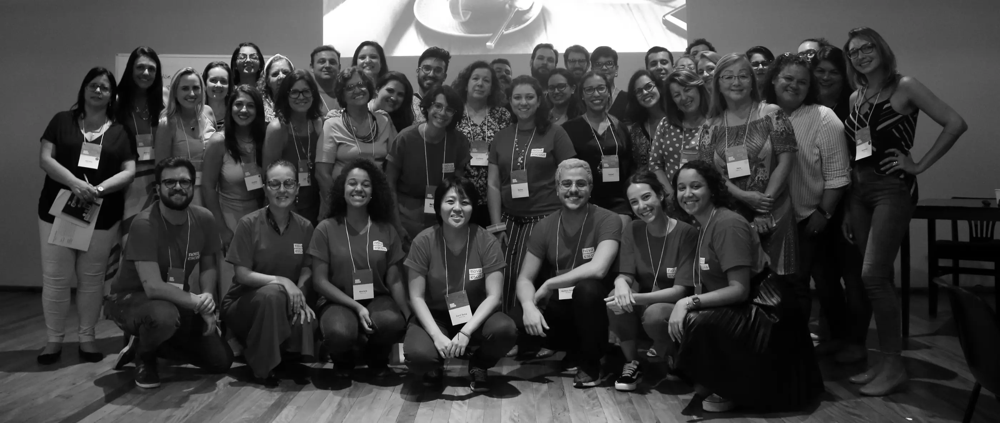
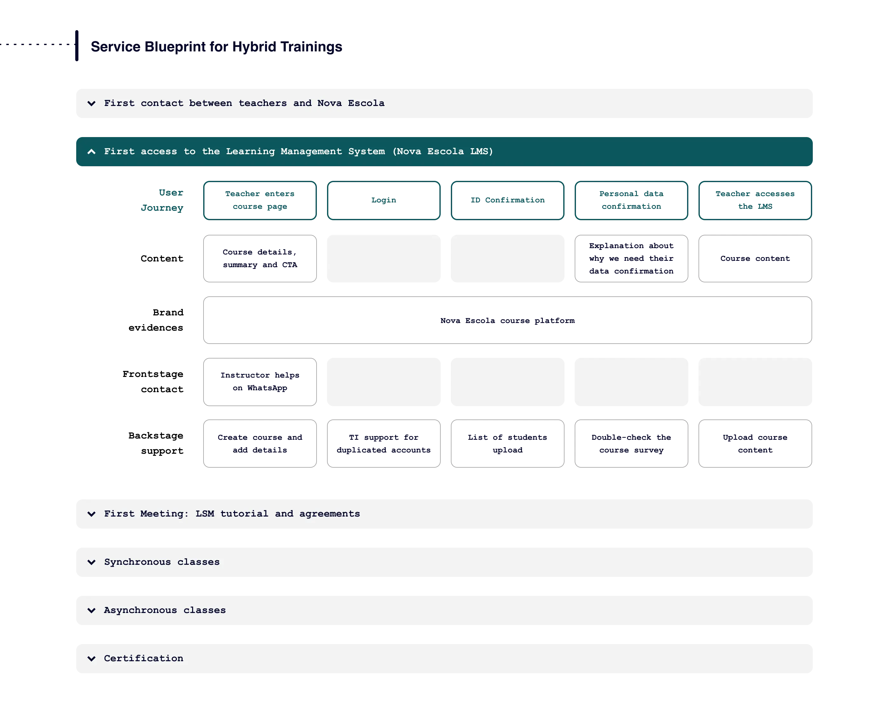
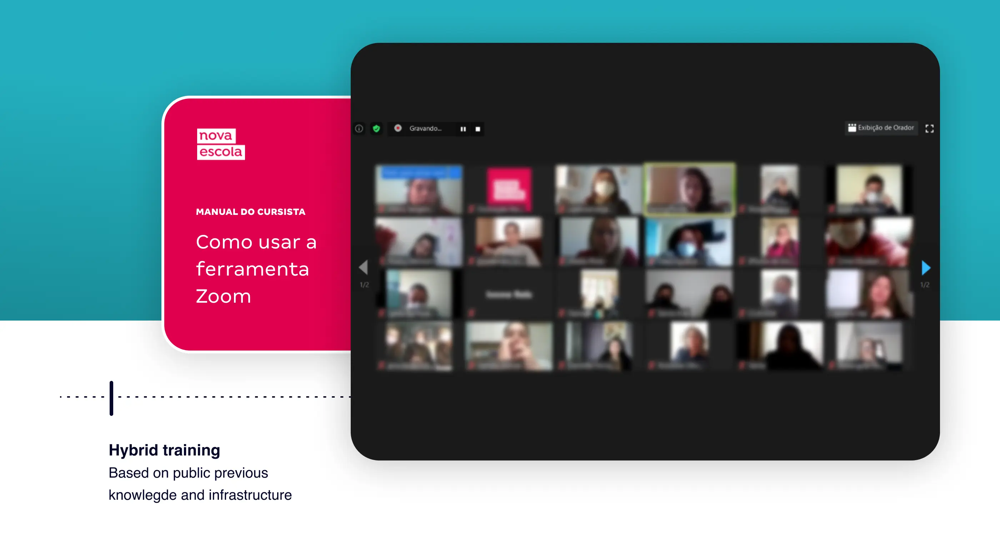
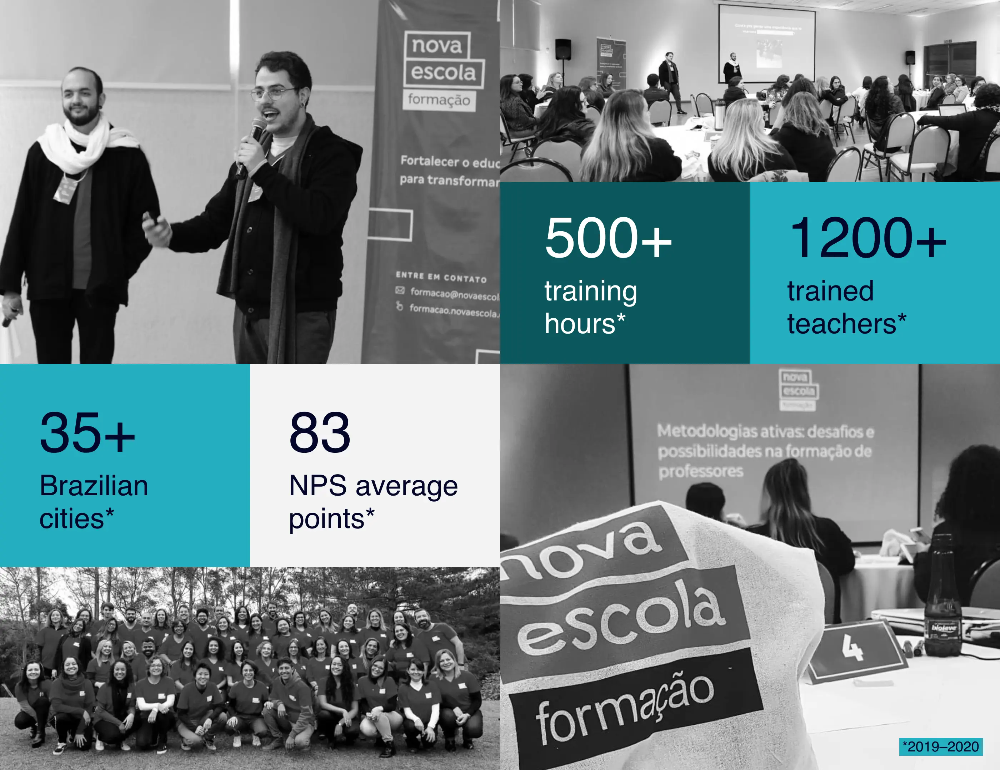

Teacher Training Experiences
Designed the end-to-end learning experience for Nova Escola's in-person and hybrid teacher training program — from diagnostic assessments and logistics to digital materials and participant journeys. Used Service Blueprint methodology to bridge physical and digital touchpoints across training sessions held all over Brazil.

Scenario, roles and deliverables
Due to the high demand for in-person training for teachers of the Brazilian public school system, Nova Escola created a new Squad focused on physical and hybrid learning experiences. As Product Designer of the Squad, my challenge was to build a quality learning experience at all stages of the participant's journey — from receiving the invitation to the training, the diagnostic assessments for participation, the choice of the physical location for the training, to the availability of digital materials and online activities.
Based on interviews with teachers and quantitative analyses of public materials and direct competitions, we, along with the pedagogical team, came up with the learning directions that would guide the elaboration of the experience. The tool chosen to support the work was the Service Blueprint, enabling a broad view of the participant's journey and of all the physical and digital intersections that would occur during the course.

One of the essential points that helped the project to succeed was the application of diagnostic knowledge assessments right at the beginning of the training. This helped not only the pedagogical team to tailor the training class by class, but also to think about the user experience in a contextual way for each group: questions about internet connection, type of device used, most used communication applications, and access to physical educational materials guided many of the choices made for the project.
The service blueprint also helped us to think of suppliers and logistics, since the training sessions took place in the most diverse places in Brazil. A welcome kit was designed to fit this routine and the limitations that are common to airline logistics.
In addition to the structure of the entire participant's journey, to working on the communication of each stage of the training, the structure for online and face-to-face meetings, and the well-being of all participants, one of the deliverables of this experience ended up being the training of a great team of teacher trainers, generating a sense of community and strengthening the pedagogical proposal of the brand.


Learnings
During almost two years working at the Training Squad, we were able to train teachers from the most diverse places in Brazil, and with each experience we learned more and more. Working on user experience for classroom activities associated with education was very remarkable, since the contact with the end user is very intense and brings a very valuable knowledge exchange.
Furthermore, dealing with such diverse people so closely has enriched my vision as a designer of human experiences, and sharpened my attention to the individualities and needs of different people within complex scenarios.
Team: Matheus Petroni (Product Designer), Raíssa Pascoal (Product Manager), Karina Padial (Content Coordinator), Letícia Alves (Marketing Analyst), Rodrigo Blanco (Content Analyst), Carolina Tamaoki (Partners), Felipe Barros (Content Assistant), Juliana Reis, João Victor Bispo, Cláudia Rejane, Naelson Silva e Daniel Barreto (Developers).